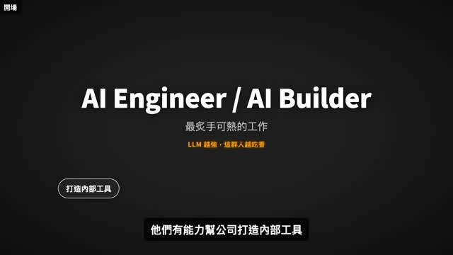
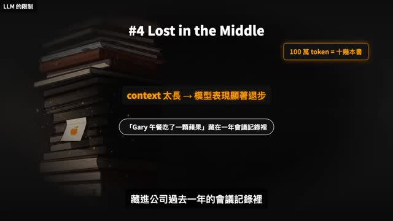
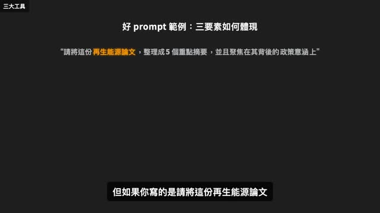

这 6 分钟真正要说什么
视频开头讲的是 AI Engineer / AI Builder，但放到教师场景里，它真正提醒我们的不是“人人都要学编程”，而是：未来的老师要学会把教学目标、学生情况、材料和评价标准，组织成 AI 能执行、自己能判断的工作流程。
很多老师第一次接触 AI，会把它理解成一个更聪明的搜索框，或者一个可以自动写作文、写教案的工具。但视频里的核心判断更进一步：基础模型本身并不等于可用的教学能力。真正有价值的部分，是我们如何给它材料、给它边界、给它任务，并在输出之后做判断。
所以，这份页面的重点不是介绍复杂技术名词，而是把视频里的概念转成教师培训时能用的语言：AI 有哪些边界，提示词到底该怎么写，哪些任务适合交给 AI，哪些地方必须由老师把关。
把工程语言翻译成教师语言
视频里提到，AI 能力增强有两条路。一条是换更强的基础模型，另一条是在现有模型上叠加方法和流程。对学校和老师来说，真正能做的是第二条：不追逐每一个新模型，而是学会设计任务、整理材料、检查结果。
| 视频里的说法 | 教师可以这样理解 | 在学校里对应什么 |
|---|---|---|
| Base Model | 一个知识很多、反应很快，但不了解本班学生和本校要求的助教。 | 不能直接让它决定教学内容，需要老师给材料和边界。 |
| Augmenting LLM | 给 AI 加上教材、学情、流程、评价标准和复核步骤。 | 把 AI 从“会说”变成“能协助完成具体教学任务”。 |
| Prompt Engineering | 把教学意图说清楚的能力。 | 不是背万能句式，而是把对象、任务、格式、限制讲明白。 |
| Prompt Chaining | 把一个大任务拆成几轮小任务。 | 先生成方案，再让 AI 自查，再由老师修改，最后形成可用材料。 |
这套翻译很重要。只有把技术词变成教学语言，老师才不会被概念吓住，也不会误以为“输入一句话，AI 就应该给出完美答案”。
AI 为什么不能直接拿来用
视频提到基础模型的几个限制。换成教师场景，可以理解为下面四件事。
- 它不知道你的班级。 AI 不知道学生的真实基础、课堂氛围、家校关系、学校要求，也不知道某个孩子最近发生了什么。
- 它可能不知道最新情况。 新教材、新政策、新通知、本校活动安排，都不能默认由 AI 准确掌握。
- 它的输出不稳定。 同一个问题，多问几次可能得到不同版本。它可以给灵感，但不能直接替老师做最终决定。
- 材料太长时会漏重点。 即使把很多资料都塞进去，AI 也可能忽略中间的小细节。长材料要分段处理，并设置检查清单。
给老师的判断：AI 的问题不在于“能不能用”，而在于“能不能带着边界用”。它适合协助生成、整理、比较、改写；不适合单独决定评价、处理隐私、替学生完成思考。



提示词不是咒语，是教学任务说明
给老师讲提示词，不建议从“万能 Prompt 模板”开始。更好的说法是：提示词就是一份微型任务书。它要让 AI 明白你是谁、给谁用、要产出什么、哪些地方不能越界。
一个可用的教学提示词，至少要包含三件事。
- 对象：这份内容给谁看？学生、家长、教研组、班主任，还是老师自己备课用？年级和学生基础是什么？
- 格式：你要的是表格、课堂流程、分层问题、板书结构、活动方案、家长通知，还是评价用语？
- 重点和边界：希望它关注什么？不能做什么？是否需要避免替学生作答、避免泄露隐私、避免未经核实的事实？
同一个任务，提示词质量会决定输出质量
不建议这样写
帮我设计一节课。
可以这样写
请帮我设计一节三年级科学《水的三态》导入活动。对象是 8-9 岁学生，时长 8 分钟，材料要常见且安全。请输出：活动步骤、教师提问、学生可能回答、需要教师现场判断的风险点。不要替学生给出完整结论，而是帮助学生通过观察自己说出来。
第二个版本并不是更“高级”，而是更像教师真实下达任务：它说明了年级、内容、时长、材料限制、输出格式和教学立场。AI 才知道它不是在写一篇文章，而是在帮助老师准备一个可以进入课堂的活动。
教师可直接使用的提示词模板
下面这些模板可以直接拿给老师使用。它们的共同点是：先限定教学对象，再限定输出格式，最后加上教师必须把关的边界。
1. 备课导入：把主题变成课堂入口
请为【年级/学科/课题】设计一个课堂导入。学生特点是【基础、兴趣、常见误区】。导入时长控制在【分钟数】以内，材料必须【常见/安全/低成本】。请输出：导入情境、教师提问、学生可能回答、教师追问、需要避免的误导。不要直接给出标准答案，要保留学生观察和表达的空间。
适合：新课导入、公开课试讲、校本研修中的教学活动设计。
2. 阅读追问：把“读懂了吗”拆成层次
请根据下面这篇课文/材料，生成 6 个阅读追问，分为三层：基础理解、情感体会、开放表达。每个问题请说明训练目标，并标注学生可能卡住的地方。不要把问题设计成只需要抄原文就能回答，也不要替学生写完整答案。
适合：语文阅读、英语阅读、道法材料分析、跨学科文本讨论。
3. 作业分层：让任务有梯度，而不是简单加量
请围绕【知识点/课题】设计一组分层作业，面向【年级】学生。分为基础巩固、迁移应用、挑战拓展三层。每层给出 2 个任务，并说明任务目的、预计用时和教师批改关注点。请避免机械重复训练，挑战题不要超出学生已经具备的前置知识太多。
适合：减负背景下的作业设计、课后服务、分层辅导。
4. 课堂活动：把想法变成可执行流程
请把“【活动想法】”改写成一份课堂活动流程。对象是【年级/人数】学生，课堂时长【分钟数】。请输出：准备材料、分组方式、教师指令、学生任务、时间安排、可能失控的环节和应对策略。要求活动有明确学习目标，不只是热闹。
适合：综合实践、科学探究、小组合作、项目化学习。
5. 教研纪要：把讨论整理成行动
请把以下教研记录整理成三部分：已经达成的共识、仍然存在的分歧、下一步行动。请用客观中性的语言，不评价具体老师，不扩写没有出现的信息。每条行动请写明负责人、时间节点和需要准备的材料，如果原文没有提到，请标注“待确认”。
适合：备课组会议、听评课记录、课题组讨论。
6. 家校沟通：清楚、尊重、不泄露隐私
请把下面的活动说明改写成一则家长通知。语气要清楚、简洁、尊重，适合发到班级群。不要包含学生姓名、成绩、家庭情况等隐私信息。请输出两个版本：正式版和更亲和的口语版，并列出发布前需要老师核对的 3 个事实。
适合：活动通知、材料收集、家校提醒、班级事务沟通。
把提示词变成工作流
视频最后引出 Prompt Chaining。给老师讲这个概念，可以不用说得太技术化。它的意思是：不要指望一句提示词完成所有事情，而是把一个复杂任务拆成几轮，让 AI 在每一轮只完成一件清楚的事。
| 步骤 | 教师要做什么 | 可以这样提示 AI |
|---|---|---|
| 1. 明确目标 | 先说清课堂目标、学生对象和材料范围。 | “请先帮我判断这个课题适合设计哪些学习目标，不要直接写完整教案。” |
| 2. 生成初稿 | 让 AI 给出结构，而不是马上要最终稿。 | “基于上面的目标，生成三个课堂活动方案，每个方案说明适用情境。” |
| 3. 对照学情 | 把本班情况补进去，让 AI 调整。 | “我们班学生表达积极，但观察记录能力弱，请把方案改得更适合他们。” |
| 4. 要求自查 | 让 AI 找风险、漏洞和不适合的地方。 | “请检查这个方案有哪些可能过难、过空或无法落地的环节。” |
| 5. 教师定稿 | 老师做最后判断，改成本班可用版本。 | “请根据我保留的部分，整理成 8 分钟课堂流程表。” |
一句话总结：提示词链不是为了让 AI 更神奇，而是为了让老师更可控。每拆一步，老师就多一次判断和修正的机会。
两种协作方式：委托型和共创型
视频里提到 Centaur 和 Cyborg。给老师讲时，可以翻译成两种更容易理解的方式。
| 方式 | 怎么用 | 适合教师做什么 | 风险 |
|---|---|---|---|
| 委托型 | 把流程清楚、标准明确的任务交给 AI 先出稿。 | 会议纪要、通知初稿、资料整理、活动流程初稿。 | 容易不核对就转发，导致事实错误或语气不合适。 |
| 共创型 | 老师和 AI 一轮一轮讨论，边改边判断。 | 课堂提问、作业分层、评价语言、公开课磨课。 | 耗时更长，但更适合需要教学判断的任务。 |
这两种方式没有高低之分。关键是：重复性高、流程明确的事情可以委托；涉及学生差异、价值判断、课堂生成的事情，必须共创。
给老师的使用底线
如果要把这 6 分钟内容讲给老师，最后应该落到几条非常清楚的底线。
- AI 可以帮老师生成初稿，但不能替老师做最终判断。
- 涉及学生隐私、成绩、家庭情况的内容，不要直接输入公共 AI 工具。
- AI 给出的事实、政策、教材信息，要回到原始来源核对。
- 不要让 AI 替学生完成本应由学生思考、表达、犯错和修正的过程。
- 老师真正要学的不是“神奇提示词”，而是把教学任务说清楚、拆清楚、查清楚。